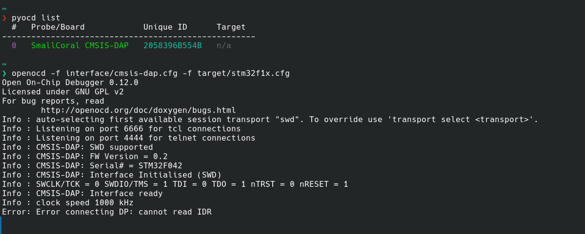

从0开始制作一个STM32 DAPLink
这东西一开始真不是我计划要做的。当时我还在老老实实写 STM32，小项目那种：点灯、串口、OLED、传感器，一步一步往上走。调试器对我来说就是“下载程序的工具”，插上能用就行。直到有一天我突然想到一件事：我现在用的 ST-Link，这玩意本身不也是个单片机吗？然后事情就开始不对劲了。
一开始真的只是想试试：能不能自己做一个。没想做多好，也没觉得能做成，就是单纯好奇。然后去查资料，第一次看到 DAPLink、CMSIS-DAP 这些东西，说实话是懵的。文档一堆，但没有一个是“从零教你做”的，全是协议、结构体、接口定义，当时的感觉就是：字都认识，但完全不知道在干嘛。
后来我干脆不管了，直接开始写。我选了一个带 USB 的 STM32，想着先把设备搞出来，结果第一关就卡在 USB 上。我之前只用过串口，对 USB 基本等于不会，CubeMX 虽然能生成代码，但你根本不知道它在干嘛。最离谱的是设备插上电脑一点反应都没有，没有报错，没有提示，就像没插一样。那段时间只能一点点查，从描述符、HID 到各种长度限制慢慢补，中间踩了很多坑，比如少一个字段设备直接消失，长度不对系统直接无视你。基本就是：改代码 → 插上 → 没反应 → 再改。
后来某一次，设备终于被识别成了一个 HID。虽然什么都不能做，但那一刻还是挺爽的，至少说明这东西“活了”。但我很快发现事情远没结束，DAPLink 不是“能通信就行”，上面还有一整套协议要自己实现，要解析数据、按格式回数据，而且你写完之后还不知道自己写得对不对。
真正卡住我的是 OpenOCD。我当时直接跑：
openocd -f interface/cmsis-dap.cfg -f target/stm32f1x.cfg
然后要么报错，要么卡住，有时候甚至一点输出都没有。那种感觉很难受：设备有了，通信也通了，但就是用不了。我那段时间基本把能试的都试了，查日志、看 /proc、怀疑驱动、怀疑板子，甚至怀疑是不是自己哪一步完全搞错了。最离谱的一次是 struct 对齐问题，代码看起来完全没问题，但数据已经错位了，这种问题卡了一整天。
后来某一次再跑 openocd，它突然开始正常输出了，没有报错，开始识别设备、初始化接口，然后成功连上目标 STM32。当时其实是愣了一下，因为前面失败太多次了，有点不太敢信。
现在回头看，这一段时间其实不是在“写一个项目”，而是在一点点把整条链路走了一遍：USB 是怎么工作的，HID 怎么传数据，调试器是怎么控制芯片的。写代码反而是最不难的部分，难的是你根本不知道你在实现什么。
最后做出来的东西其实很简单：能识别，能连接，能调试。跟成熟的调试器肯定没法比，但感觉完全不一样——以前是会用工具，现在是知道它是怎么来的。如果非要总结一下，大概就是：一开始只是想试试，结果越陷越深。